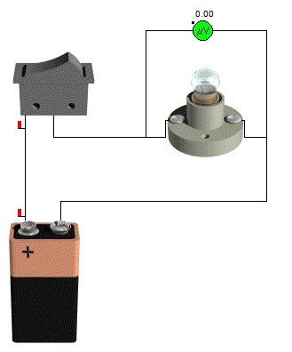
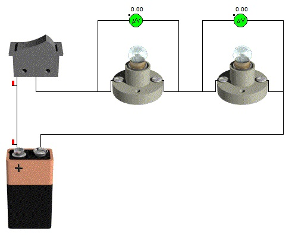
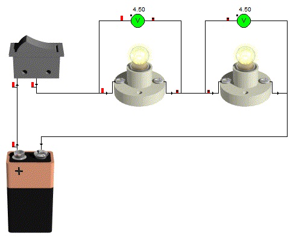
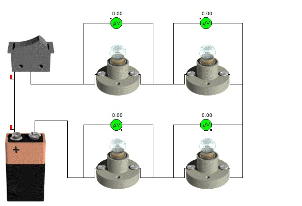

En un circuito en serie todos sus elementos están conectados uno a continuación del otro, como en una cadena, de manera que por todos ellos circula la misma corriente eléctrica.
Supongamos 3 circuitos, el 1º con una sola bombilla, el 2º con dos bombillas y el 3º con cuatro. En todos los circuitos tenemos una pila del mismo voltaje. Podemos observar que la bombilla del circuito 1º luce mucho más que las de los otros dos circuitos, y por contra las del circuito 3º lucirán mucho menos.
Esto se debe a que el voltaje de la pila se tiene que repartir entre todas las bombillas, pero la intensidad es la misma en todos los elementos del circuito.
Vpila = V1 + V2 + V3
Ipila = I1 = I2 = I3
Veamos esto desarrollando con datos los 3 casos anteriores.
1º.- Tenemos un circuito, con una única bombilla. En este caso, el voltaje de la pila será el mismo que hay en la bombilla. Como se puede ver, el voltímetro no marca ningún valor estando apagado, pero cuando se cierra el circuito (se permite el paso de los electrones), la bombilla se ilumina y el voltímetro nos indica el valor correspondiente, que en este caso es de 9 v.
Vpila = Vbombilla1


2º.- Ahora disponemos de un circuito con 2 bombillas. Observamos que estando apagado (interruptor abierto) las bombillas están apagadas y el voltímetro no indica ningún valor. En el momento que conectamos el circuito (cerramos el interruptor para que pasen los electrones), las bombillas se iluminan, pero con menos intensidad que en el circuito de 1 bombilla, y eso se debe a que, el voltaje se tiene que repartir entre las dos bombillas. Sin embargo, la intensidad (el número de electrones) será la misma en todos los puntos.
Vpila=Vbombilla1+Vbombilla2 9v = 4,5v +4,5v
Ipila=Ibombilla1=Ibombilla2


3º.- Veamos lo que pasa en el circuito con 4 bombillas. Las bombillas, brillarán mucho menos, ya que el voltaje que hay en cada una de ellas es menor, sin embargo, la intensidad (la cantidad de electrones que pasan) será la misma.
Vpila=Vbom1+Vbom2+Vbom3+Vbom4 9v = 2,25v + 2,25v + 2,25v + 2,25v
Ipila = Ibombilla1 = Ibombilla2 = Ibombilla3 = Ibombilla4
